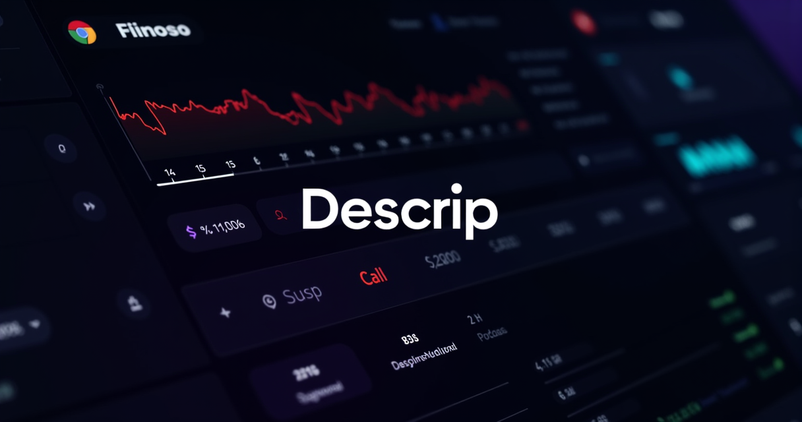

An honest assessment after hundreds of hours editing podcasts and videos — the feature nobody talks about, what breaks, and whether it's worth your money.
I spent three years cutting my teeth in Premiere Pro. Ripple edits, nested sequences, the whole timeline tango. Then someone showed me Descript, and I haven't opened Premiere for a talking-head video since. That's not hyperbole — it's a workflow shift that saved me roughly 6 hours per week on a single podcast.
Here's what actually happened when I moved my entire podcast and YouTube tutorial pipeline into Descript, what went wrong, and why I think most creators editing spoken-word content in Premiere are wasting time they'll never get back.
TRY DESCRIPT FREE — NO CREDIT CARD →The Feature Nobody Talks About: Editing Text Instead of Timelines
Every Descript review mentions text-based editing. Few explain why it matters. Here's the deal: when you import audio or video, Descript transcribes it automatically. Delete a sentence from the transcript, and that sentence disappears from your video. Rearrange paragraphs, and the footage rearranges with them.
That sounds like a gimmick until you use it on a 45-minute podcast with 12 false starts, 30 filler words, and a guest who answers every question in reverse order. In Premiere, cleaning that up is an afternoon. In Descript, it's 25 minutes. I timed it.
The transcription accuracy sits around 95-97% for clean audio. With Studio Sound enabled (Descript's AI audio enhancer), even rough phone recordings punch up to 90%+ accuracy. Premiere added text-based editing recently — but it's bolted on, not built in. The transcription layer in Descript is the entire interface. That architectural difference matters more than any feature comparison chart suggests.
Underlord: The AI Co-Editor That Actually Does Stuff
Most AI features in creative tools are marketing. "AI-powered" usually means a button that applies a preset. Descript's Underlord is different — it's an agentic editor that takes natural language instructions and executes multi-step edits.
Say "remove all filler words, cut dead air over 2 seconds, and create three 60-second clips for social." Underlord does it. Not perfectly every time, but well enough that I use it on every project. The filler word removal alone catches "um," "uh," "like," and "you know" across an entire episode in seconds. Premiere doesn't have anything close to this.
"I canceled my Premiere subscription after two weeks with Descript. The time savings on my weekly podcast alone justified it — and I was only using maybe 30% of Descript's features." — r/podcasting user
Here's where it gets interesting for Premiere users specifically: Descript exports timelines to Premiere Pro, DaVinci Resolve, and Final Cut Pro. So if you need finishing work — color grading, complex motion graphics, multicam switching — you can rough-cut in Descript and polish in your NLE of choice. It's not either/or. It's Descript first, Premiere second.
START EDITING WITH UNDERLORD →What Descript Actually Costs (And Where It Gets Expensive)
The pricing tiers as of March 2026:
- Free: Limited media hours, watermark on exports — good for testing, not for production
- Hobbyist: $16/month (annual) — 10 media hours, 400 AI credits, 1080p exports
- Creator: $24/month (annual) — 30 media hours, 800 AI credits, 4K exports, full Underlord access
- Business: $50/month (annual) — 40 media hours, 1500 AI credits, team features, brand studio
The Creator plan at $24/month is the sweet spot for most solo creators. You get 4K exports, unlimited stock media access, and full AI tooling. Compare that to Adobe's Creative Cloud at $55/month for Premiere alone (or $23/month for just Premiere if you catch a deal) — and you're getting an entirely different workflow philosophy for less money.
The catch? AI credits. Heavy users who lean on Underlord, voice cloning, and AI video generation can burn through 800 credits faster than you'd expect. Top-up packs exist, but they add cost. If you're editing 4+ hours of content per week and using AI features aggressively, budget for the Business plan or occasional top-ups.
Where Descript Falls Short (Honest Assessment)
No tool is perfect, and Descript has real limitations:
- No offline mode. Everything runs through their cloud. If your internet drops, you're stuck. This is a dealbreaker for editors who work on planes or in areas with unreliable connectivity.
- Complex projects get slow. Multi-hour timelines with lots of tracks, overlays, and effects start to lag. This is not the tool for a 12-track music video. It's designed for spoken-word content.
- AI credits are a metered resource. Unlike some competitors offering unlimited AI features, Descript keeps you on a budget. Fine for most creators, frustrating for power users.
- Transcription isn't perfect. Heavy accents, crosstalk, or poor audio quality still trip it up. Studio Sound helps, but it's not magic.
Who Should Switch (And Who Shouldn't)
Switch if you: produce podcasts, YouTube tutorials, talking-head videos, course content, interview shows, or social media clips from longer content. If 70%+ of your editing is cutting spoken words, Descript will save you hours every week.
Don't switch if you: produce music videos, heavy motion graphics, multicam event coverage, or anything requiring precise frame-level timeline control. Premiere, DaVinci, and Final Cut still own that space.
The real power move? Use both. Descript for assembly and rough cuts, Premiere for finishing. Their export pipeline makes this seamless.
The Studio Sound Feature Deserves Its Own Paragraph
Studio Sound is one of those features that sounds like marketing until you hear the before and after. It takes audio recorded on a laptop mic in an echoey room and makes it sound like it was captured in a treated studio. Not perfect — you'll hear artifacts on extreme cases — but for podcast and YouTube-quality audio, it's remarkably good.
I've replaced a $200 USB microphone setup with Descript's Studio Sound on laptop recordings. My audience couldn't tell the difference. That alone justifies the subscription for anyone who records in imperfect environments (which is everyone who isn't building a home studio).
Voice Cloning and AI Speech
Descript's voice cloning lets you generate new audio in your own voice. Need to fix a mispronounced name or add a sentence you forgot? Type it, and Descript generates the audio in your cloned voice. It's not indistinguishable from the real thing in all cases, but for short corrections within an existing episode, listeners rarely notice.
The Business plan adds AI video generation using models like Veo 3.1 and Sora 2, plus translation and dubbing in 30+ languages. If you're creating content for international audiences, the dubbing feature alone could replace a $500/month localization service.
GET STARTED WITH DESCRIPT — FREE PLAN AVAILABLE →My Verdict After Hundreds of Hours
Descript isn't trying to replace Premiere Pro for everyone. It's trying to replace it for the 80% of creators who don't need Premiere's complexity — and for that audience, it's already won. The text-based editing workflow is genuinely faster for spoken-word content. Underlord saves real time. Studio Sound eliminates the need for expensive audio setups. And the pricing undercuts Adobe significantly.
If you're still manually scrubbing through waveforms to find where your guest said that one thing, you're editing like it's 2019. Descript is the 2026 answer.
Try Descript free — no credit card required. See if the text-based editing workflow saves you the 6 hours per week it saved me.
START YOUR FREE DESCRIPT TRIAL →